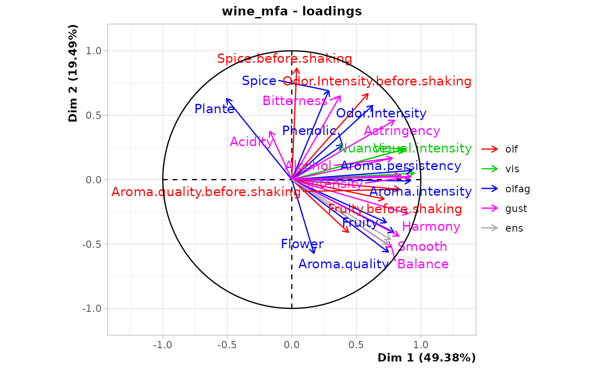
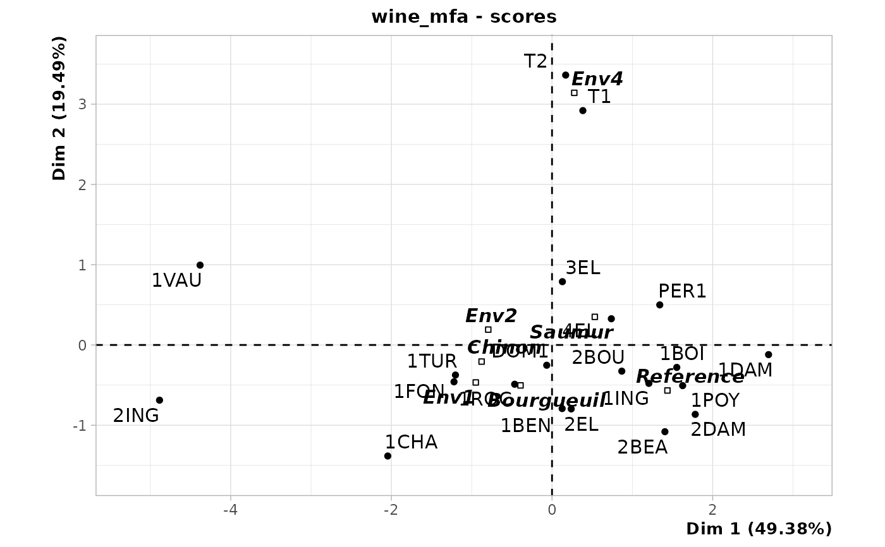
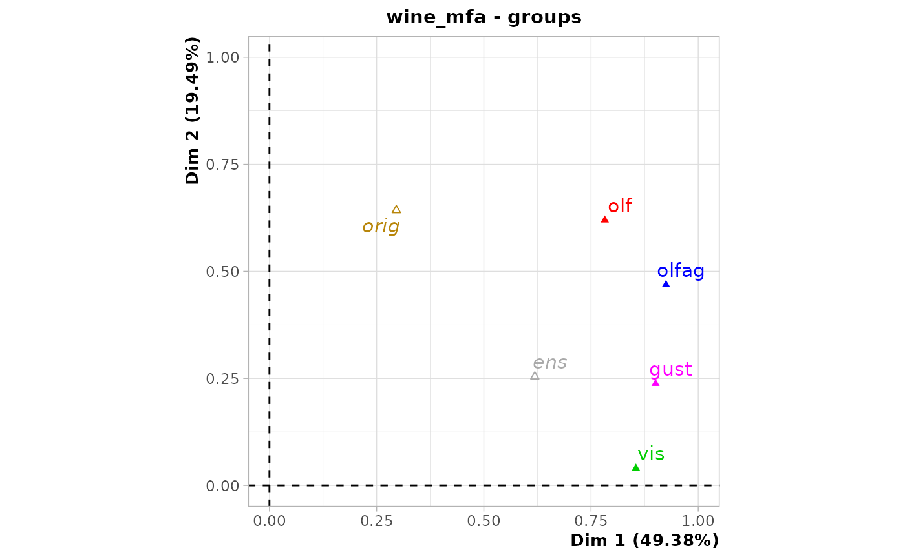
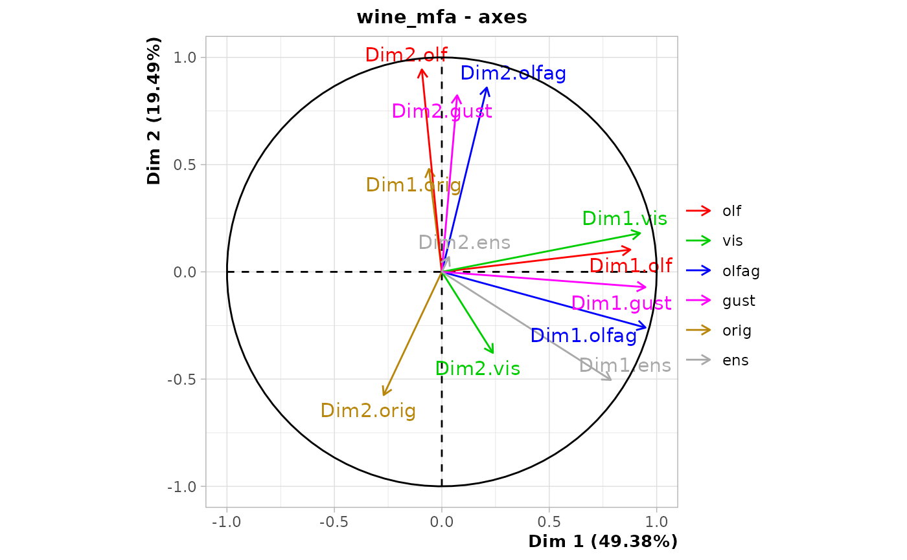

Analyze several groups of variables at once with supplementary
groups of variables or individuals. Each group can be numeric, factor or
contingency tables. Missing values are replaced by the column mean and
missing values for factors are treated as an additional level. This is a
formula interface to the FactoMineR::MFA() function.
mfa(data, formula, nd = 5, suprow = NA, ..., graph = FALSE)
# S3 method for MFA
autoplot(
object,
type = c("screeplot", "altscreeplot", "loadings", "scores", "groups", "axes",
"contingency", "ellipses"),
choices = 1L:2L,
name = deparse(substitute(object)),
col = "black",
fill = "gray",
title,
...,
env
)
# S3 method for MFA
chart(
data,
choices = 1L:2L,
name = deparse(substitute(data)),
...,
type = NULL,
env = parent.frame()
)Arguments
- data
A data frame
- formula
A formula that specifies the variables groups to consider (see details)
- nd
Number of dimensions kept in the results (by default, 5)
- suprow
A vector indicating the row indices for the supplemental individuals
- ...
Additional arguments to
FactoMineR::MFA()or to the plot- graph
If
TRUEa graph is displayed (FALSEby default)- object
An MFA object
- type
The type of plot to produce:
"screeplot"or"altscreeplot"for two versions of the screeplot,"loadings","scores","groups","axes","contingency"or"ellipses"for the different views of the MFA.- choices
Vector of two positive integers. The two axes to plot, by default first and second axes.
- name
The name of the object (automatically defined by default)
- col
The color for the points representing the observations, black by default.
- fill
The color to fill bars, gray by default
- title
The title of the plot (optional, a reasonable default is used)
- env
The environment where to evaluate code,
parent.frame()by default, which should not be changed unless you really know what you are doing!
Value
An MFA object
Details
The formula presents how the different columns of the data frame are grouped
and indicates the kind of sub-table they are and the name we give to them in
the analysis. So, a component of the formula for one group is
n * kind %as% name where n is the number of columns belonging to this
group, starting at column 1 for first group, kind is std for numeric
variables to be standardized and used as a PCA, num for numerical variables
to use as they are also as a PCA, cnt for counts in a contingency table to
be treated as a CA and fct for classical factors (categorical variables).
Finally, name is a (short) name you use to identify this group. The kind
may be omitted and it will be std by default. If %as% name is omitted, a
generic name (group1, group2, group3, ...) is used. The complete formula is
the addition of the different groups to include in the analysis and the
subtraction of the supplementary groups not included in the analysis, like
~n1*std %as% gr1 - n2*fct %as% gr2 + n3*num %as% gr3, with groups "gr1" and
"gr3" included in the analysis and group "gr2" as supplemental. The total
n1 + n2 + n3 must equal the number of columns in the data frame.
Note
The symbols for the groups are different in mfa() and FactoMineR::MFA()).
To avoid further confusion, the symbols use three letters here:
stdis the same assinMFA(): "standardized" and is the defaultnumstands here for "numeric", thus continuous variablescinMFA()cntstands for "contingency" table and matchesfinMFA()fctstands for "factor", thus qualitative variablesninMFA()
Examples
# Same example as in {FactoMineR}
library(chart)
data(wine, package = "FactoMineR")
wine_mfa <- mfa(data = wine,
~ -2*fct %as% orig +5 %as% olf + 3 %as% vis + 10 %as% olfag + 9 %as% gust - 2 %as% ens)
wine_mfa
#> **Results of the Multiple Factor Analysis (MFA)**
#> The analysis was performed on 21 individuals, described by 31 variables
#> *Results are available in the following objects :
#>
#> name description
#> 1 "$eig" "eigenvalues"
#> 2 "$separate.analyses" "separate analyses for each group of variables"
#> 3 "$group" "results for all the groups"
#> 4 "$partial.axes" "results for the partial axes"
#> 5 "$inertia.ratio" "inertia ratio"
#> 6 "$ind" "results for the individuals"
#> 7 "$quanti.var" "results for the quantitative variables"
#> 8 "$quanti.var.sup" "results for the quantitative supplementary variables"
#> 9 "$quali.var.sup" "results for the categorical supplementary variables"
#> 10 "$summary.quanti" "summary for the quantitative variables"
#> 11 "$summary.quali" "summary for the categorical variables"
#> 12 "$global.pca" "results for the global PCA"
summary(wine_mfa)
#>
#> Call:
#> MFA(base = data, group = params$groups, type = params$types,
#> ind.sup = suprow, ncp = nd, name.group = params$names, num.group.sup = params$suppl,
#> graph = graph)
#>
#>
#> Eigenvalues
#> Dim.1 Dim.2 Dim.3 Dim.4 Dim.5 Dim.6 Dim.7
#> Variance 3.462 1.367 0.615 0.372 0.270 0.202 0.176
#> % of var. 49.378 19.494 8.778 5.309 3.857 2.887 2.506
#> Cumulative % of var. 49.378 68.873 77.651 82.960 86.816 89.703 92.209
#> Dim.8 Dim.9 Dim.10 Dim.11 Dim.12 Dim.13 Dim.14
#> Variance 0.126 0.105 0.079 0.074 0.060 0.029 0.022
#> % of var. 1.796 1.502 1.124 1.054 0.861 0.409 0.313
#> Cumulative % of var. 94.005 95.506 96.630 97.684 98.545 98.954 99.268
#> Dim.15 Dim.16 Dim.17 Dim.18 Dim.19 Dim.20
#> Variance 0.019 0.011 0.009 0.006 0.003 0.002
#> % of var. 0.273 0.156 0.131 0.091 0.047 0.035
#> Cumulative % of var. 99.541 99.697 99.827 99.918 99.965 100.000
#>
#> Groups
#> Dim.1 ctr cos2 Dim.2 ctr cos2
#> olf | 0.782 22.591 0.380 | 0.620 45.346 0.239 |
#> vis | 0.855 24.688 0.728 | 0.040 2.937 0.002 |
#> olfag | 0.925 26.712 0.625 | 0.469 34.309 0.161 |
#> gust | 0.900 26.009 0.722 | 0.238 17.408 0.050 |
#> Dim.3 ctr cos2
#> olf 0.374 60.695 0.087 |
#> vis 0.014 2.337 0.000 |
#> olfag 0.180 29.263 0.024 |
#> gust 0.047 7.705 0.002 |
#>
#> Supplementary groups
#> Dim.1 cos2 Dim.2 cos2 Dim.3 cos2
#> orig | 0.296 0.033 | 0.643 0.156 | 0.196 0.015 |
#> ens | 0.619 0.380 | 0.254 0.064 | 0.010 0.000 |
#>
#> Individuals (the 10 first)
#> Dim.1 ctr cos2 Dim.2 ctr cos2
#> 2EL | 0.239 0.078 0.016 | -0.797 2.211 0.182 |
#> 1CHA | -2.045 5.751 0.419 | -1.383 6.667 0.192 |
#> 1FON | -1.220 2.048 0.367 | -0.459 0.734 0.052 |
#> 1VAU | -4.381 26.404 0.874 | 0.995 3.446 0.045 |
#> 1DAM | 2.696 9.996 0.754 | -0.120 0.050 0.002 |
#> 2BOU | 0.869 1.038 0.219 | -0.326 0.371 0.031 |
#> 1BOI | 1.553 3.318 0.617 | -0.280 0.272 0.020 |
#> 3EL | 0.129 0.023 0.003 | 0.789 2.167 0.115 |
#> DOM1 | -0.066 0.006 0.002 | -0.253 0.222 0.027 |
#> 1TUR | -1.202 1.987 0.310 | -0.375 0.489 0.030 |
#> Dim.3 ctr cos2
#> 2EL 0.936 6.775 0.250 |
#> 1CHA 1.514 17.725 0.229 |
#> 1FON 0.062 0.030 0.001 |
#> 1VAU -0.033 0.009 0.000 |
#> 1DAM -0.690 3.683 0.049 |
#> 2BOU 0.391 1.183 0.044 |
#> 1BOI -0.414 1.324 0.044 |
#> 3EL 1.858 26.707 0.636 |
#> DOM1 -0.459 1.629 0.090 |
#> 1TUR -0.716 3.964 0.110 |
#>
#> Continuous variables (the 10 first)
#> Dim.1 ctr cos2 Dim.2 ctr cos2
#> Odor.Intensity.before.shaking | 0.591 4.497 0.349 | 0.667 14.530 0.445 |
#> Aroma.quality.before.shaking | 0.835 8.989 0.698 | -0.075 0.186 0.006 |
#> Fruity.before.shaking | 0.716 6.606 0.513 | -0.151 0.741 0.023 |
#> Flower.before.shaking | 0.439 2.480 0.192 | -0.409 5.469 0.168 |
#> Spice.before.shaking | 0.038 0.019 0.001 | 0.865 24.420 0.748 |
#> Visual.intensity | 0.881 7.912 0.776 | 0.238 1.466 0.057 |
#> Nuance | 0.862 7.577 0.744 | 0.234 1.408 0.055 |
#> Surface.feeling | 0.950 9.198 0.903 | 0.049 0.063 0.002 |
#> Odor.Intensity | 0.627 2.416 0.393 | 0.576 5.155 0.331 |
#> Quality.of.odour | 0.791 3.844 0.626 | -0.410 2.612 0.168 |
#> Dim.3 ctr cos2
#> Odor.Intensity.before.shaking -0.023 0.039 0.001 |
#> Aroma.quality.before.shaking -0.354 9.092 0.125 |
#> Fruity.before.shaking -0.537 20.939 0.289 |
#> Flower.before.shaking 0.637 29.439 0.406 |
#> Spice.before.shaking 0.128 1.187 0.016 |
#> Visual.intensity 0.141 1.139 0.020 |
#> Nuance 0.142 1.155 0.020 |
#> Surface.feeling -0.027 0.043 0.001 |
#> Odor.Intensity 0.214 1.581 0.046 |
#> Quality.of.odour -0.221 1.684 0.049 |
#>
#> Supplementary continuous variables
#> Dim.1 cos2 Dim.2 cos2 Dim.3 cos2
#> Overall.quality | 0.747 0.558 | -0.504 0.254 | 0.130 0.017 |
#> Typical | 0.766 0.586 | -0.466 0.217 | 0.039 0.001 |
#>
#> Supplementary categories
#> Dim.1 cos2 v.test Dim.2 cos2 v.test
#> Saumur | 0.533 0.483 1.343 | 0.350 0.209 1.405 |
#> Bourgueuil | -0.392 0.176 -0.596 | -0.504 0.291 -1.219 |
#> Chinon | -0.877 0.537 -1.022 | -0.207 0.030 -0.384 |
#> Reference | 1.437 0.823 2.442 | -0.567 0.128 -1.534 |
#> Env1 | -0.949 0.614 -1.613 | -0.467 0.149 -1.263 |
#> Env2 | -0.794 0.554 -1.067 | 0.191 0.032 0.409 |
#> Env4 | 0.277 0.008 0.216 | 3.141 0.971 3.899 |
#> Dim.3 cos2 v.test
#> Saumur 0.235 0.094 1.404 |
#> Bourgueuil -0.216 0.054 -0.780 |
#> Chinon -0.322 0.072 -0.889 |
#> Reference -0.164 0.011 -0.662 |
#> Env1 0.455 0.141 1.834 |
#> Env2 -0.382 0.129 -1.218 |
#> Env4 -0.062 0.000 -0.116 |
chart$scree(wine_mfa)
chart$altscree(wine_mfa)
chart$loadings(wine_mfa)
#> Warning: ggrepel: 1 unlabeled data points (too many overlaps). Consider increasing max.overlaps

chart$scores(wine_mfa)

chart$groups(wine_mfa)

chart$axes(wine_mfa)

# No contingency group! chart$contingency(wine_mfa)
chart$ellipses(wine_mfa)